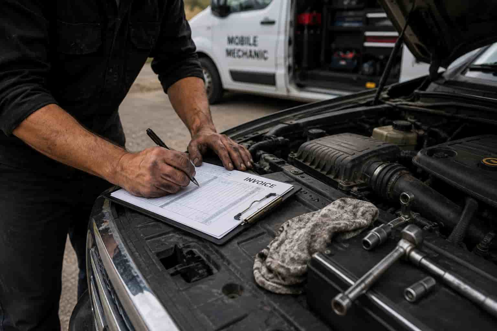

Routine maintenance on your vehicle is important to extend vehicle life and avoid costly repairs.
When you are experiencing vehicle troubles, our team of trained professionals can assist you in diagnosing the issue with your vehicle. After the problem has been found, we will go over our findings and discuss pricing before we begin service.
Brakes are one of the most common routine services that are done on vehicles. It is important to make sure that your brakes are in excellent condition to keep you safe on the road.
Before calling a tow truck and having to go through the hassle of taking it to a shop, give us a call first! We are happy to assist and get you back on the road, avoiding the extra fees and time it takes to tow the vehicle.

(c) 2026 Ben's Mobile Mechanic Truck. All Rights Reserved.